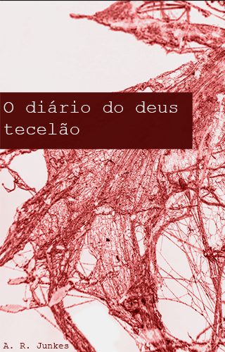

Diário do deus tecelão
Teodoro é um jovem estudioso que vai com seu amigo para de estudar em uma universidade que forma magos e soldados em Yamato. Chegando no país onde estudará, se depara com eventos estranhos e ele mesmo se vê mudando. Conforme vai se tornando um deus cuja o trabalho é lutar ao lado humanos em uma guerra contra as criaturas criadas pelos próprios humanos, vai perdendo seus sentimentos, perdendo seus amigos e em meio ao completo desespero tenta se encontrar e voltar a sentir o amor.
- O diário do deus tecelão é um Spin off da linha principal de outras histórias -
A. R. Junkes
Valor Não encontrado